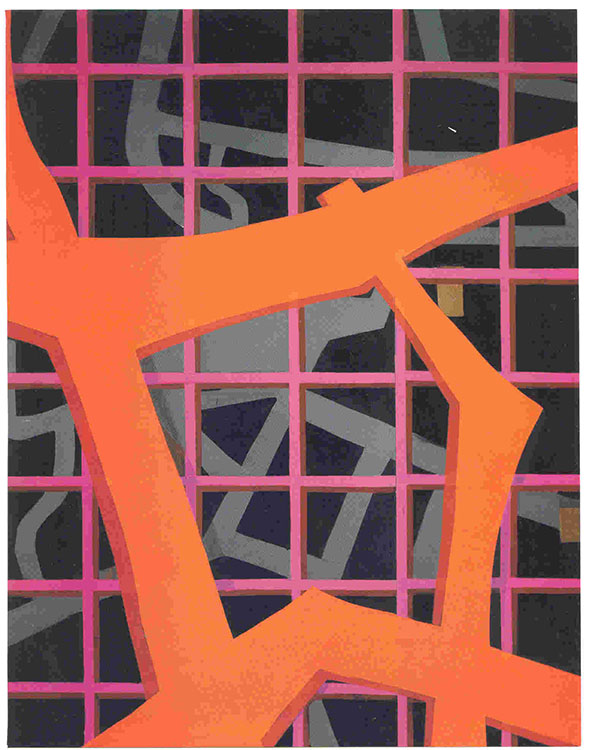
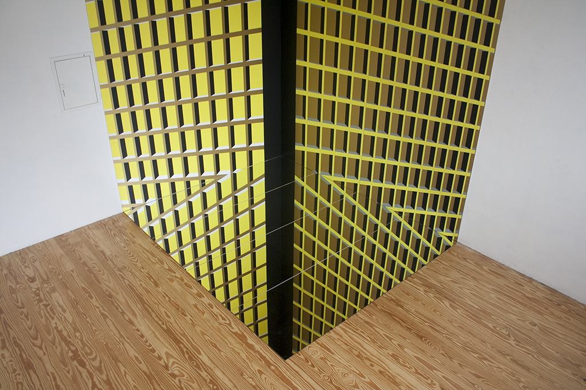

- Может быть, уже к концу нашего столетия
- будет воздвигнут храм невозможного, в
- котором нам откроется головокружительная
- перспектива прекрасного и достойного
- поклонения несуществующего,
- освобождающего нас на несколько мгновений
- от цепей реальности.
- Оскар Рутерсвард, 1989г.
- будет воздвигнут храм невозможного, в
Ожидание Мастера Невозможных фигур было не напрасно. Храм несуществующего действительно начал воздвигаться во второй половине ХХ века — пока ещё виртуальный. Его очертания угадывались в произведениях стиля оп-арт и геометрического искусства, а также сюрреализма. Основателем «храма» по справедливости следует считать Виктора Вазарели.
Как видно, идеи его иллюзионизма оказались актуальными в цивилизованных странах: стиль оп-арт активно развивался в Европе и Америке. (Р.Анушкевич, Б.Райли, Мэн Рэй, Л.Мохой-Надь, Й.Альберс, Ф.Стэлла). Немало последователей стиля работали также в России и «постсоветских» республиках. Самые видные представители этого направления — Фр. Инфанте, В.Ф. Колейчук, Иван Казанцев.
В нашей Республике интерес к геометрическому искусству возник с некоторым запозданием — после того, как в США и Европе «наскучила вся эта безупречность», и американский критик Ким Левин в журнале Art Magazine 1979 распрощался с модернизмом. Впрочем, в те времена не раз объявляли не только конец модернизма, но и «смерть искусства».
На самом деле искусство оказалось сверх ожидания живучим, и эстафета геометрического абстракционизма была подхвачена в нашей стране лесов и болот. Самые выдающиеся мастера этого стиля — Вл. Цеслер, Сергей Лапша, Тамара Соколова, Сергей Кирющенко, Олег Мурашко.
Начиная с 2000-го года, в творчестве Сергея Кирющенко преобладает мотив решетки. В своей обширной коллекции решетчатых структур Художник показал, насколько неисчерпаема эта тема.
На первый взгляд, композиции первых лет ХХI века не производят впечатления чего-то необычного и противоречащего законам геометрии. Однако, более внимательный взгляд обнаруживает некоторые «неувязки», диссонансы форм и красок, неожиданные метаморфозы.
Вот несколько примеров.
(Городская бабочка) — нагромождение разномасштабных и разноцветных тяжелых плит. Несовместимость названия работы и её оптических свойств, лёгкости насекомого и тяжести железобетона, органической и геометрической форм. Ясно, что здесь имеет место художественный приём, но он относится к типичным приёмам сюрреализма.
(Знаки пространственных взаимодействий) — контраст форм из тонких и массивных стержней, прямых и изломанных. Этим достигается иллюзия расположения решеток в разных пространственных слоях. Логическая несовместимость их форм подчеркивается цветовыми диссонансами оранжевого с розовым и серым.

(Лоция для Харона) — алогичное сочетание решеток сложной конфигурации. Несовместимость названия и визуальной структуры: вряд ли даже Харону можно будет разобраться в этой «лоции».
(Смерть Бобо) — совмещение несовместимого: фронтальных элементов с перспективными, геометрически правильных с неправильными, «ручной работы»; неожиданные метаморфозы и искривления форм. Впрочем, загадочность композиции соответствует странностям стихотворения Иосифа Бродского, на которое намекает название картины.
Отмеченные выше особенности «решетчатых» картин не следует понимать как критику «недостатков»: всё это художественные приёмы, заостряющие мысль Художника. Они, по моему мнению, свидетельствуют о том, что Сергей Кирющенко упорно движется вперед по пути освобождения из-под власти банального «здравого смысла» и композиционных канонов современного искусства. Приведенные здесь четыре работы (их могло бы быть и больше) говорят о том, что Художник достигает этого в какой-то мере, но полностью перейти на позиции «геометрического сюрреализма» пока не может. О. Рутерсвард назвал такие изображения «сомнительными».
И вот, наконец, сказано решительное слово, преодолена «сомнительность» созданных ранее решетчатых структур. Художник высказался прямо и смело, утверждая реальность иллюзии и доказывая её право на существование наряду со всеми жанрами так называемого реалистического искусства.
В 2010 году из мастерской Сергея Кирющенко вышли четыре новых картины, которые можно назвать пластическими манифестами недоверия реальности и устранения засилия разума.
Здесь классическая решетка не отвлекается на варьирование, фрагментирование, разрушение, — она абсолютно правильна и классически непогрешима…но только до правого края картины. Здесь она «плывёт» куда-то вниз, как будто обессилев от своей строгой стойки «смирно».
В четырех первых картинах этого цикла решетчатые панели прерываются гладкими прямоугольными вставками (плоскостями) и решетки между вставками почему-то уходят в перспективу, покидая фронтальную плоскость картины. Почему? Зачем? Это каприз, или отказ повиноваться скучному здравому смыслу, выйти на просторы фантазии, испытать бодрящий ужас от встречи с потерявшим вожжи подсознанием?
А может быть, это напоминание зрителю о том, что существует неотменяемый закон энтропии? Даже при самом идеальном устройстве человеческого мира оно (устройство) со временем изменяется — частично нарушается и где-то в неизвестно насколько отдаленном будущем обречено на конец, или полную замену чем-то другим.
Потому и не похожи «решетки» С. Кирющенко на ажурные ограды или на клетчатые ткани. Внимательного зрителя они заставляют задуматься; он ощутит некоторую неловкость, душевный дискомфорт от того, что прочное на вид сооружение всё же подвержено разрушающему воздействию времени.
Лучшие умы человечества на основании этого исторического факта (наблюдения закона энтропии) сделали заключение о недоверии всемогуществу разума и возможностям позитивной науки. В истории философии можно проследить своего рода «философский сюрреализм», или скептицизм (и даже нигилизм), подвергающий сомнению, или даже отрицанию способность человечества устроить мир по законам разума.
«Есть и должен быть предел власти разума» (Лев Шестов)
Одновременно с проблемой разума возникает проблема реальности в жизни и искусстве. Буддийская философия категорически отрицает реальность всего существующего в феноменальном мире, объявляя всё чувственно воспринимаемое иллюзией.
«Как на сновидение, иллюзию, тень пузырей, как на росу и молнию, так следует смотреть на все деятельные «законы». (Алмазная Праджняпарамита сутра)
Такое же недоверие чувственно воспринимаемой действительности выражает античная философия в лице Платона. Вспомним самое яркое создание его гениальной фантазии — притчу о пещере, в которой сидят люди спиной ко входу и видят не действительную жизнь, а всего лишь тени на стене пещеры.
В сущности, все религии основаны не на разуме, а на вере в потусторонние силы и в существа, созданные воображением. Поэтому все культы богов сопровождались (и сопровождаются) ересями — сомнениями в реальном существовании сверхъестественных сил и существ.
Однако, помимо религии, мы постоянно видим в жизни явления, обладающие свойствами иллюзий — обманы зрения, метаморфозы, внезапные деформации социальных и психических процессов, необъяснимые гримасы подсознания.
Летом 2010 года в Дюссельдорфе (Германия) Сергей Кирющенко продемонстрировал работу, в которой был подведен итог его многолетних экспериментов на тему «решетки». Эта работа — инсталляция — своего рода философия в пластике. Она заставляет задуматься о проблеме реальности, актуальной в наше время, как никогда.
Есть ли теперь что-либо несомненное, явное и прочное, гарантированное и разумное? В области общественных и межличных отношений — ничего. Мы только и живем иллюзиями, мифами, несбыточными надеждами.
Сила изобразительного искусства в том, что оно внушает человеку определенные идеи без слов, и сопротивляться им трудно, почти невозможно (если, конечно, идея в нем заложена и ясно выражена). Это аналогично действию лекарства: слова — это таблетки, а изображение — внутривенная инъекция. Недаром говорят, что лучше один раз увидеть, чем десять раз услышать.
Инсталляция в Дюссельдорфе убеждает не только своей композицией и виртуозной конструкцией — она выполнена с идеальной точностью, технически безукоризненно, твердой рукой. Мысль, которую она внушает, не может быть подвергнута сомнению — настолько категорически она высказана. Вместо традиционных красок и холста здесь использованы алюминиевые листы и пластиковые ленты, клеющиеся на основание.
Замысел работы предельно прост: в углу экспозиционного зала помещаются две панели с рисунком решеток, уходящих в перспективу.
Уже в таком, незавершённом виде инсталляция вызывает сильную иллюзию: панели образуют не входящий угол, а выступающий. Свидетельства зрения и осязания упрямо расходятся.
Но в завершённом виде инсталляция внушает ещё более поразительную иллюзию: в нижней части решеток появились острые углы, образованные горизонтальными стержнями и наклонными к ним.
Откуда эта метаморфоза? Оказывается, это всего лишь иллюзия, созданная при помощи зеркала.


Все параметры инсталляции рассчитаны с такой точностью, что зритель в начале осмотра не подозревает «обмана зрения». И только позже, разобравшись в ситуации, он испытывает потрясение — от зрелища чуда, от сознания несовершенства своих органов чувств, которые могут поддаться обману. Чему больше верить? Зрению или осязанию? Разуму или чувству?
Работа Сергея Кирющенко «Инсталляция в Дюссельдорфе» подобна «невозможным фигурам» Оскара Рутерсварда, которые «...переносят наше внимание в мир фикции, не подвластный логике и разуму».
Я бы добавила — и заостряющие наше внимание к абсурдам бытия.
Л. Миронова,
09.07.2011